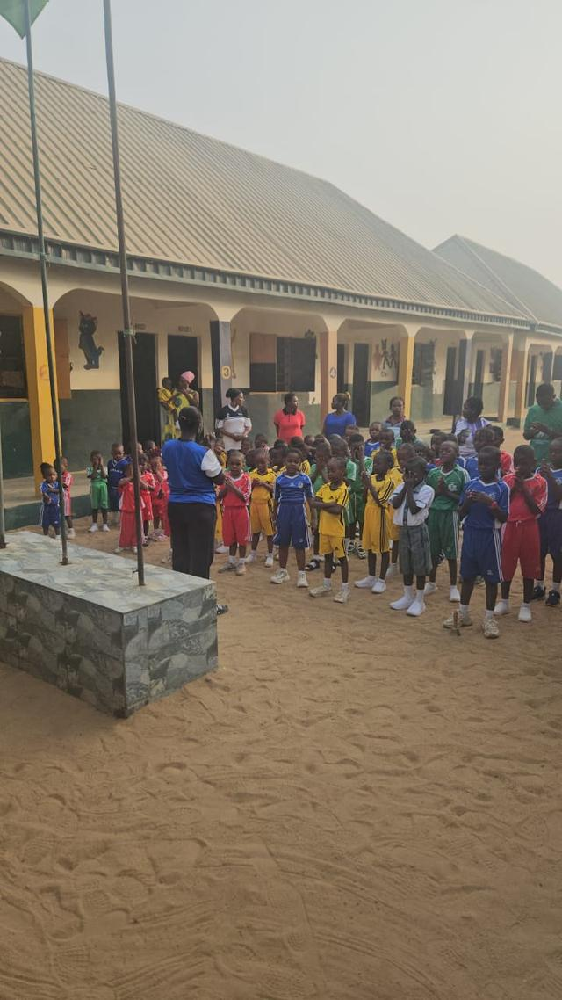
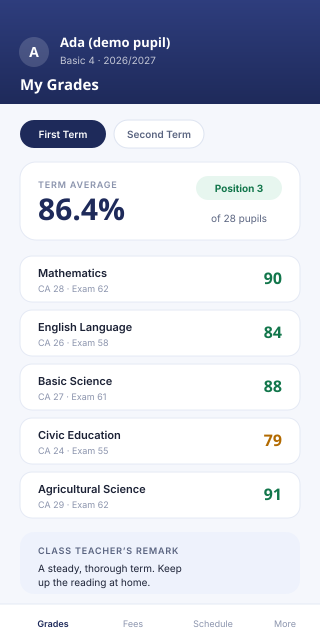

Small classes, and your child's results on your phone.
Creche to JSS 3 in Kertyo, Makurdi, since 2011. Classes small enough that every child is known by name — with results, fees and attendance published straight to the parent portal, wherever you are.

What Makes TBD International Academy Special
We provide a nurturing environment where students thrive academically, socially, and morally.
Quality Education
Our curriculum is designed to meet international standards while maintaining Nigerian educational values and culture.
Learn MoreExperienced Teachers
Our dedicated team of qualified educators brings passion and expertise to every classroom.
Meet Our TeamModern Facilities
State-of-the-art classrooms, laboratories, library, and sports facilities to support holistic development.
View FacilitiesTechnology Integration
We leverage technology to enhance learning experiences and prepare students for the digital age.
Explore MoreCharacter Development
We emphasize moral values, discipline, and character building alongside academic excellence.
Our ValuesExtracurricular Activities
Sports, arts, music, and clubs provide opportunities for students to discover and develop their talents.
View ActivitiesAcademic Levels
From early childhood to junior secondary, we offer comprehensive education at every stage. Tap a level to see what it covers.
Creche
Nurturing young minds with love and care, in a safe and cheerful space built around your child's daily routine.
- Warm, attentive care from trained minders
- Sensory play that builds early motor skills
- Structured feeding, nap and activity routines
Pre-Nursery & Nursery 1 – 3
A warm and nurturing environment where young learners begin their educational journey with play-based learning and foundational skills.
- Four classes — Pre-Nursery and Nursery 1, 2 and 3
- Play-based classrooms, early literacy, numeracy and phonics
- A dedicated class assistant alongside the teacher in Nursery 1 and 2
Basic 1 – 6
Building strong academic foundations in literacy, numeracy, and critical thinking while fostering creativity and curiosity.
- Lower Basic (1–3) and Upper Basic (4–6), each with its own head of section
- Full Nigerian curriculum, with computer studies and hands-on basic science
- Clubs, sports and creative arts every week
Junior Secondary (JSS 1 – 3)
Preparing students for senior secondary with comprehensive subject offerings and structured exam preparation.
- BECE-focused revision and mock examinations
- Dedicated science and ICT laboratories
- Career guidance and leadership training
A term at TBD, in pictures
Assembly, lessons, sports and graduation day — photographed on our campus behind the Civil Service Commission in Kertyo.
Fifteen Years of Growing Together
Since 2011 we have grown into one of Makurdi's trusted learning communities.
Your child’s results, the day they are ready.
Most parents wait for a result slip to survive the journey home in a schoolbag. Ours do not. Report cards, fee statements and attendance are published to the parent portal and available on any phone, wherever you are.
- Termly results and report cards, published to your account
- Fee statements and payment history, itemised to the last naira
- Attendance and assignment tracking, term by term
- Works in any phone browser — nothing to install

Four Steps to Join Us
Applying is straightforward — and you can do most of it from your phone.
Download the Form
Grab the application form for your child's level from the admissions page.
Fill It In
Complete every section and gather the supporting documents listed on the form.
Submit Online
Upload the completed form — no need to travel to the campus to apply.
Meet Us
We will call you to arrange an assessment and a tour of the school.
Meet our proprietor
TBD International Academy is guided by its proprietor, Emmanuel I. Hangerior, and by the vision that gives the school its purpose:
To raise global Superstars in all aspects of human endeavours.
Fifteen years on, that aim still shapes every classroom from Creche through JSS 3 — and every family who trusts us with a child.
Emmanuel I. Hangerior
Proprietor, TBD International Academy
Who looks after your child
Every section of the school has a head you can ask for by name when you visit.
A head for every section
Nursery, Lower Basic and Upper Basic each have their own head of section, so there is always someone who knows your child's year group and can answer for it.
Two adults in the youngest rooms
Nursery 1 and Nursery 2 each have a class assistant working alongside the class teacher, so the youngest learners are never left to one pair of hands.
A supervised campus
A compound master and a security team cover the grounds through the school day, and first aid provision is in place for every class.
Frequently Asked Questions
Still unsure about something? These are the questions we hear most often.
The academic year runs in three terms starting in September. Applications are open now, and we recommend applying early because places in each class are limited.
We admit into Creche, Pre-Nursery, Nursery 1–3, Basic 1–6 and Junior Secondary (JSS 1–3). Transfer students are welcome subject to a placement assessment.
Fees can be paid securely online through the parent portal, or at the school bursary. The full fee structure for each level is published on the admissions page.
Yes. Every enrolled family gets portal access for results, report cards, attendance and fee statements — available on any phone or computer.
Absolutely — we encourage it. Call or message us to arrange a tour and meet the teachers who would be working with your child.
Ready to Join TBD International Academy?
Applications for the 2026/2027 academic year are now open. Download our application form, fill it out, and submit it online.
Questions? We usually reply the same working day.